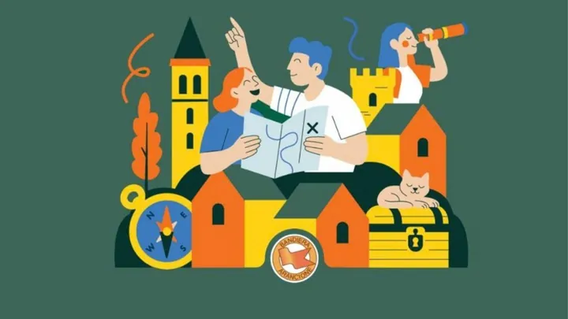

dom 4 ott
Caccia ai Tesori Arancioni
La più grande caccia al tesoro d'Italia coinvolgerà i borghi Bandiera Arancione.
 Indicazioni
Indicazioni
- Costi e prenotazioni
- Costo non indicato · Prenotazione non indicata
- Programma
- Programma da verificare. Apri la fonte ufficiale per orari e possibili aggiornamenti.
- In caso di maltempo
- Nessuna indicazione specifica pubblicata.
- Note
- Acquisito automaticamente dalla fonte.
L’EVENTO
Descrizione completa
La più grande caccia al tesoro d'Italia coinvolgerà i borghi Bandiera Arancione.
Un'entusiasmante sfida che si rinnova anno dopo anno, per scoprire, divertendosi, le piccole eccellenze dell’entroterra, i borghi certificati con la Bandiera Arancione , percorrenode le strade dei borghi a caccia di storie, persone, monumenti e piccole curiosità.
La Caccia ai Tesori Arancioni è organizzata dal Touring Club con la collaborazione del Comune di Montagnana. La più grande caccia al tesoro d’Italia è aperta ad adulti e bambini che saranno coinvolti in un percorso a sei tappe per scoprire la profonda e autentica identità del territorio e delle comunità residenti, immergendosi nelle tradizioni, nei sapori e nella storia dei luoghi.
Per partecipare basta iscrivere la propria squadra sul sito dedicato e mettersi in gioco, per vivere una domenica diversa dal solito e scoprire luoghi affascinanti e spesso poco noti. All’iscrizione si riceverà un piccolo ma prezioso omaggio in formato digitale, il “Ricettario del Borgo” , con ricette tipiche dai borghi Bandiera Arancione, per portare in tavola la vera eccellenza italiana.
Novità di questa edizione sono tappe speciali, in alcuni Comuni, che toccano luoghi legati a San Francesco d’Assisi , in occasione degli 800 anni dalla morte del Santo che si celebrano proprio domenica 4 ottobre, l’introduzione di un passaporto che verrà consegnato al termine della Caccia ai Tesori Arancioni, da timbrare ogni anno per testimoniare la partecipazione all’evento e un’esclusiva sacca zaino consegnata alle squadre iscritte.
La Caccia ai Tesori Arancioni è aperta a tutti, per partecipare è richiesta una donazione che andrà a sostenere i progetti del Touring Club Italiano.
IL PROGRAMMA
Programma e orari
Appuntamenti raccolti dalle fonti elencate. Dove manca un orario, non è ancora disponibile in questa scheda.
Programma pubblicato
- 2026-10-04 — 2026-10-04 · 10:00:00
INFORMAZIONI UTILI
Prima di partire
- Controllare la fonte prima di partire.
ORGANIZZAZIONE